[BIM]건축설계인테리어(AutoCAD+Sketchup+Revit) 및 전산응용건축제도기능사(실기)
- 교육기간
- 2025-12-03 ~ 2026-03-25
- 교육시간
- 09:20~18:00 (8시간), 주 5일(월~금), 총600시간
- 교육과목
- AutoCAD+Sketchup+Revit
- 교육내용
- 전산응용건축제도기능사 실기, 실내건축설계/시각화, 건축설계, 3차원 BIM설계
- 수강료
- 4,302,000원 (전액 지원)
무엇을 배우나요?
-
실내건축설계자료조사분석 NCS 분류 번호 : 1403010403_14v2 실내건축설계 자료 조사 분석은 프로젝트 설계에 앞서 주어진 실내공간의 관련자료를 조사하고 분석하여 적용하는 능력이다.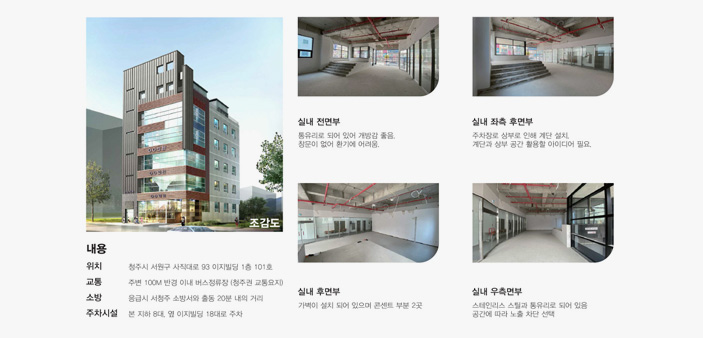
-
실내건축설계도서작성 NCS 분류 번호 : 1403010408_14v2 실내건축 설계도서 작성이란 설계자의 의도를 정확하게 파악하여 수립된 계획안에 대한 형태와 마감재, 시공방법 등을 컴퓨터 응용프로그램을 이용해 각 프로세스별 상황에 부합하도록 설계도서를 작성하는 능력이다.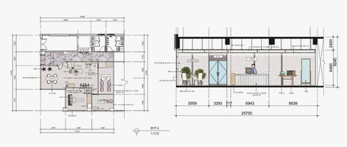
-
실내건축설계시각화작업 NCS 분류 번호 : 1403010406_14v2 실내건축설계 시각화 작업이란 설계업무를 수행함에 있어 구상하거나 구체화한 결과물을 수작업과 컴퓨터를 이용하여 2D와 3D, 모형 등으로 제작하여 구현하는 능력이다.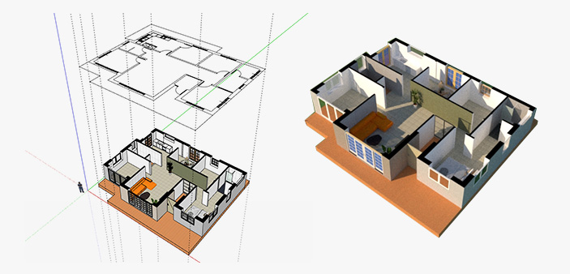
-
건축설계설계도서작성 NCS 분류 번호 : 1403010108_14v2 건축설계 설계도서작성이란 수립된 계획안을 협력분야들과 상호 조정하여 발전 및 구체화 시키고 재료와 공법을 결정하여 설계목표와 의도에 적합하게 건물이 세워질 수 있도록 일련의 과정에 필요한 도서들을 작성하는 능력이다.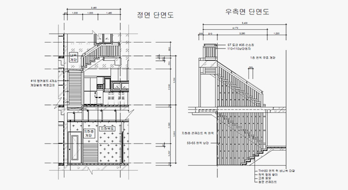
-
BIM설계 NCS 분류 번호 : 1403010406_14v2 실내건축설계 시각화 작업이란 설계업무를 수행함에 있어 구상하거나 구체화한 결과물을 수작업과 컴퓨터를 이용하여 2D와 3D, 모형 등으로 제작하여 구현하는 능력이다.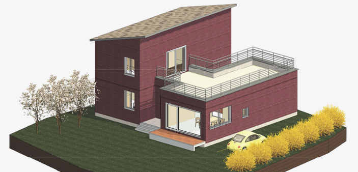
전산응용건축제도기능사
Craftsman Computer Aided Architectural Drawing
Craftsman Computer Aided Architectural Drawing
건축물의 기본설계도 또는 계획설계도에 따라 컴퓨터를 사용하여 건축설계에서 의도하는 바를 현장에 필요한 도면으로 표현하는 능력을 평가하는 실무 중심의 자격시험입니다.
건축설계사무소, 건축구조사무소, 건축설비사무소, 조경회사, 도시계획회사, 인테리어 회사, 환경설계회사, 특허법률사무소 등으로 진출할 수 있다. 컴퓨터를 이용한 제도가 보편화되고
이와 관련된 소프트웨어의 지속적인 개선과 보급으로 기존 수작업을 하던 제도사들이 급격히 감소하고 CAD등의 제도용프로그램을 사용하는 전산응용제도사의 인력수요 증가가 예상됩니다.
| 자격종목(과목) | 구분 | 문항 및 시험방법 | 시험시간 | 합격기준 |
|---|---|---|---|---|
| 전산응용건축제도기능사 | 필기 | 1.건축계획 및 제도 2.건축구조 3.건축재료 | 1시간 | 100점 만점에 60점 이상 |
| 실기 | 전산응용건축제도작업 | 4시간 | 100점 만점에 60점 이상 |
- 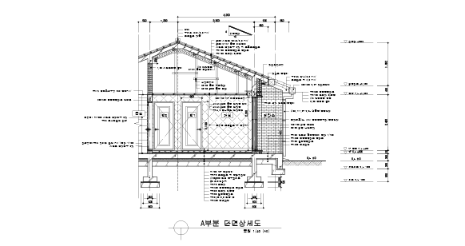
- 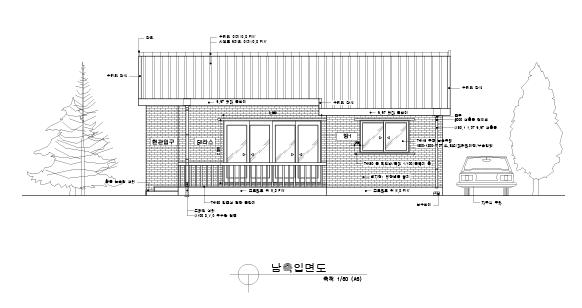
수료생 작품보기
이지디자인컴퓨터학원에서 NCS 직무과정을 수료한 학생들의 작품입니다.
실내건축설계자료조사분석
- 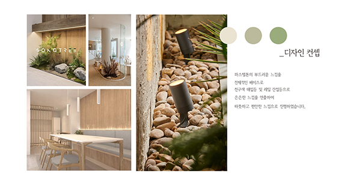
- 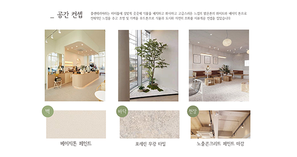
실내건축설계도서작성
- 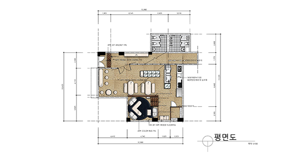
- 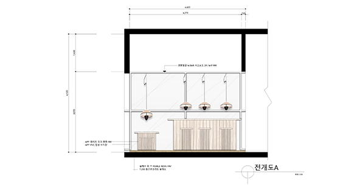
- 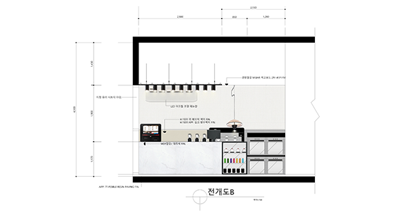
- 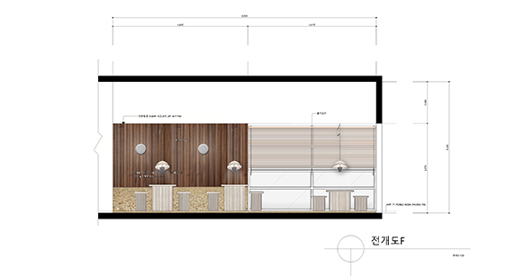
- 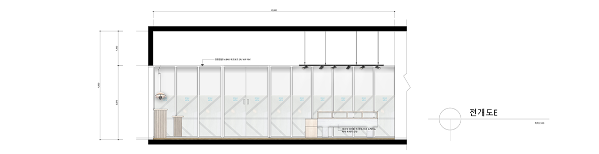
실내건축설계시각화(스케치업)
- 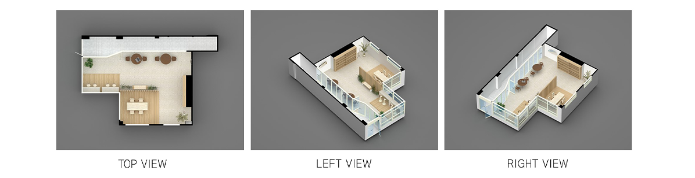
- 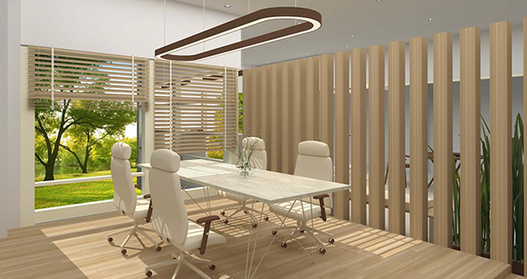
- 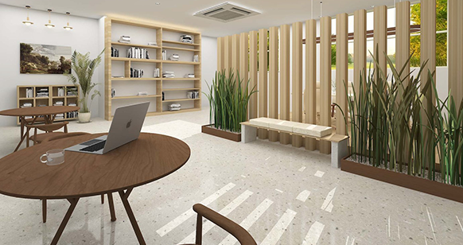
BIM설계(레빗)
- 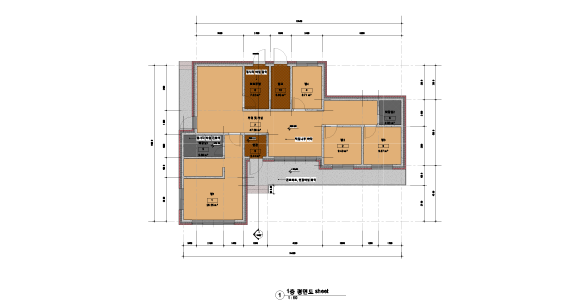
- 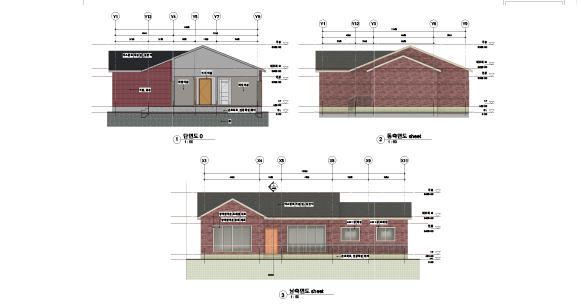
- 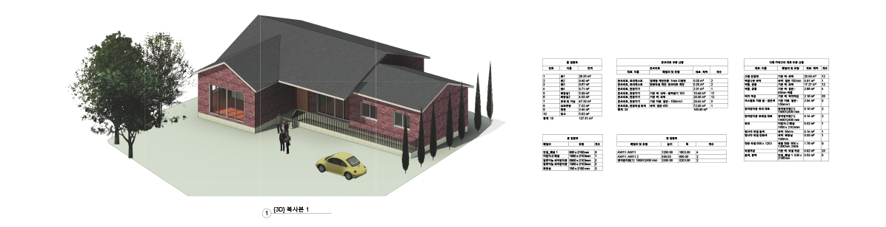
EZ수업만의 강점!
-
실무 중심의 우수한 커리큘럼
실무 중심의 커리큘럼으로, 실무 강사진이 이끄는 실전형 교육을 통해 기업 현장에서 바로 통하는 핵심 스킬을 익힐 수 있습니다.
-
전문강사의 수업진행
실무 현장에서의 풍부한 경험과 다년간의 강의 노하우를 갖춘 전문 강사가 직접 지도하여, 이론과 실무를 균형 있게 학습할 수 있습니다.
-
수업 녹화 영상 제공
실제 수업내용 전체를 녹화하여 영상으로 제공합니다. 수업내용을 필기 하지않아도 쉽게 복습할 수 있습니다.
훈련장려금 및 수당 안내
고용노동부 장관은 국가기간·전략산업직종 훈련 실시규정 제32조에 의하여 다음 각 호의 요건을 충족하는 자에게 훈련 장려금을 지급한다.
-
지급 훈련대상
실업급여 수급자격이 없는 자 : 법 제40조에 의한 대기기간은 훈련수당 지급기간에서 제외한다.
훈련기간 중 단위 기간의 출석일수가 80% 이상인 자 - 지원혜택 전액 국비지원, 매월 200,000원 ~ 최대 700,000원 훈련 장려금 지급